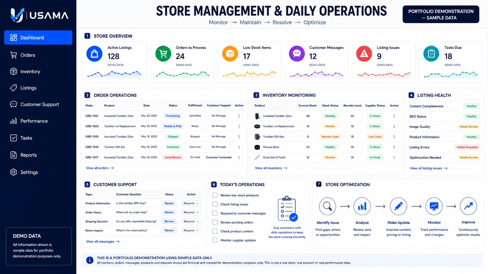

Portfolio Demo
Product Research
Compares landed cost, marketplace fees and margin for sample products across Walmart and TikTok Shop. Presented as supplied work, sample work, visual or portfolio demonstration — not a fabricated client result.

Visual proof
Supplied visuals, samples and demonstrations are clearly labeled. No invented testimonials, revenue claims or rankings.
Compares landed cost, marketplace fees and margin for sample products across Walmart and TikTok Shop. Presented as supplied work, sample work, visual or portfolio demonstration — not a fabricated client result.

Walks through a supplier comparison checklist covering MOQ, unit cost, shipping and verification. Presented as supplied work, sample work, visual or portfolio demonstration — not a fabricated client result.

Shows how priority issues get identified and organized into a practical next-step list. Presented as supplied work, sample work, visual or portfolio demonstration — not a fabricated client result.

Demonstrates a listing rebuild — titles, bullets, attributes and search-relevant structure. Presented as supplied work, sample work, visual or portfolio demonstration — not a fabricated client result.

Shows how product visuals are structured around features, benefits and content hierarchy. Presented as supplied work, sample work, visual or portfolio demonstration — not a fabricated client result.

Demonstrates a product-first social-commerce presentation and shopping flow. Presented as supplied work, sample work, visual or portfolio demonstration — not a fabricated client result.

Shows how a Walmart Seller Center store is prepared across settings, shipping, returns and catalog. Presented as supplied work, sample work, visual or portfolio demonstration — not a fabricated client result.

Demonstrates how recurring orders, inventory, tasks and reporting stay organized. Presented as supplied work, sample work, visual or portfolio demonstration — not a fabricated client result.

Shows how restrictions, claims, attributes and imagery are reviewed for compliance risk. Presented as supplied work, sample work, visual or portfolio demonstration — not a fabricated client result.

Demonstrates repeatable response workflows for order issues and escalation. Presented as supplied work, sample work, visual or portfolio demonstration — not a fabricated client result.

Outlines the store types and seller situations this workflow is built for. Presented as supplied work, sample work, visual or portfolio demonstration — not a fabricated client result.

Summarizes the core principles behind the research-before-execution approach. Presented as supplied work, sample work, visual or portfolio demonstration — not a fabricated client result.

Maps the stages a store moves through from setup to ongoing growth. Presented as supplied work, sample work, visual or portfolio demonstration — not a fabricated client result.

Lays out the marketplace growth path from launch to scaled operations. Presented as supplied work, sample work, visual or portfolio demonstration — not a fabricated client result.

Visualizes the connected research → source → list → optimize → set up → manage workflow. Presented as supplied work, sample work, visual or portfolio demonstration — not a fabricated client result.

Shows how a project moves from decision to scoped, executed tasks. Presented as supplied work, sample work, visual or portfolio demonstration — not a fabricated client result.
Interactive workbook
Inspect sample data on-site. Demo data is not a verified client result.
FREE STORE AUDIT
Share the platform, store or project context. Your request opens WhatsApp with the details prefilled. Prefer email? usama.ecomops@gmail.com.